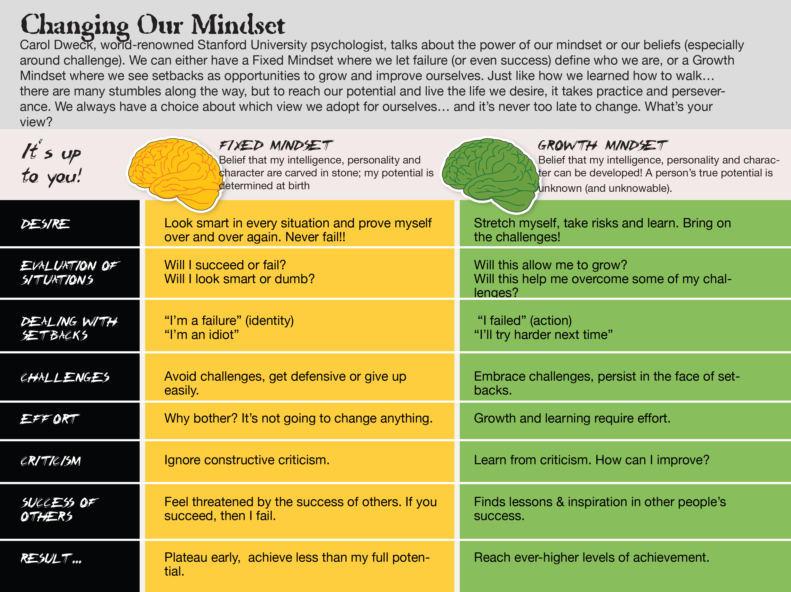

According to Caltech, "Impostor syndrome can be defined as a collection of feelings of inadequacy that persist even in face of information that indicates that the opposite is true. It is experienced internally as chronic self-doubt, and feelings of intellectual fraudulence."
Select the image below that shows how you feel.
What does Tina Fey, Dr. Margaret Chan (Chief of the WHO), Maya Angelo, Emma Watson, Kate Winslet, Neil Gamon and Don Cheadle all have in common? They have all felt like frauds who could be found out. In fact approximately 70% of people have suffered from Imposter Syndrome.
Imposter Sydrome can be divided into three subcategory:
In truth, Imposter Syndrome is associated with highly achieving, highly successful people. It's the feeling that the person is a fraud when it is untrue.
Ways to Overcome Imposter Syndrome
Own your successes. When you receive positive feedback, embrace it with objectivity and internalize it. By denying it, you are downplaying that person’s judgement.Don’t attribute your successes to luck.Don’t talk about your abilities or successes with words like "merely," "only," "simply," etc.
By selecting this option you are saying "I am okay, but I have my moments". Doubt is a natural human response. The fact that you recognize your flaws and areas in which you are lacking is the KEY to success. Only then can you improve and change. It's important to keep an open mind on where you are on your journey and where you want to be.

You are one cool cucumber. There is no coding challenge that you cannot conquer! You know your place in the coding world and you feel like a valuable part of the team.
Keep up the good work! Each obstacle you encounter in programming is a chance to grow and become a stronger developer.